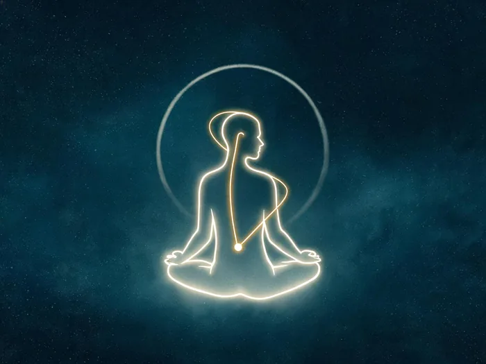
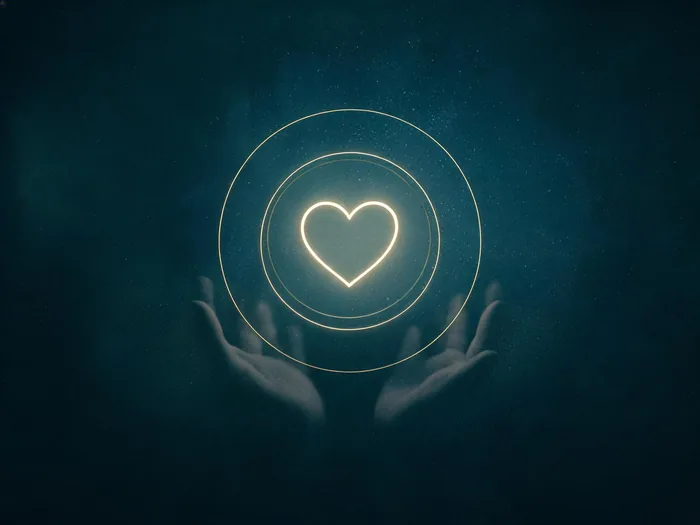
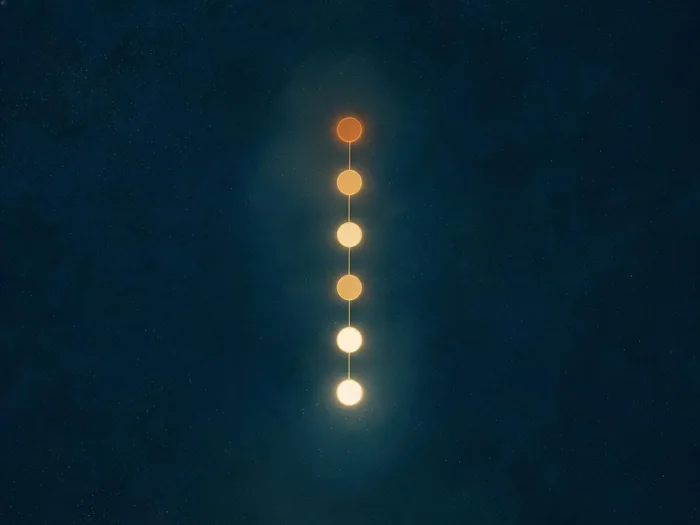
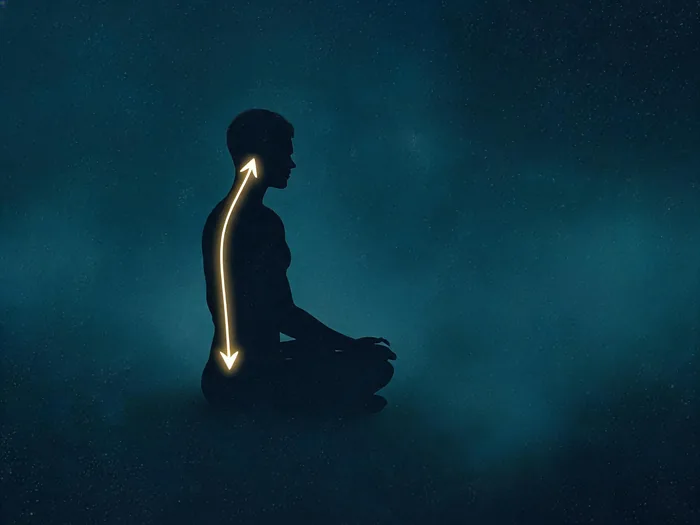
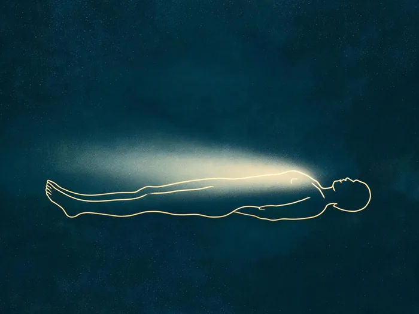

Зміст
Перед початком
Як вибрати практику
Чотири правила, які знімають половину питань ще до першої сесії.
З чого почати
Зі сканування тіла або шаматхи: вони прощають помилки й не потребують образів. Десяти хвилин на день достатньо, щоб зрозуміти, як поводиться увага.
Як часто
Краще коротко й регулярно, ніж довго й раз на місяць. Три-чотири рази на тиждень уже дають різницю, яку можна помітити.
Скільки чекати
Перші зрушення зазвичай приходять через два-чотири тижні: спершу легше помічати відхід уваги, потім стає тихіше сама тиша.
Чого не чекати
Тиша не приходить на замовлення. Практика — це тренування повернення, а не іспит на порожню голову, і відволікатися на ній нормально.
Про докази
Як ми описуємо ефекти
В описах ми розділяємо три речі: що каже традиція, що людина відчуває на практиці і що підтверджено дослідженнями. Там, де даних мало, ми так і пишемо, навіть якщо практика гарна й давня.
Жодна практика на цій сторінці не є лікуванням. Медитація може знижувати рівень стресу, покращувати настрій і увагу, але при тривозі, депресії, хронічному болю та інших станах вона працює разом із лікарем і терапією, а не замість них.
Класичні практики
Традиції, у яких увага й дихання складаються у стійку форму.

01 / Даосизм, цигун
Мікрокосмічна орбіта
Замкнене коло уваги: вгору хребтом і вниз передньою лінією тіла.
Мікрокосмічна орбіта, по-китайськи сяо чжоу тянь, — одна з базових практик даоської внутрішньої алхімії, нейдань. Увага тут рухається замкненим контуром: вгору вздовж спини Керуючим каналом, ду-май, і вниз передньою стороною тіла Функціональним каналом, жень-май. Два канали замикаються в кільце — звідси й слово «орбіта». Дихання задає ритм цьому руху, але не стає об'єктом контролю.
Традиція виводить практику з даоських текстів про алхімію: ранні згадки кола сягають «Чжоу і цань тун ці» (II століття), а розгорнутий опис є у Чжан Бодуаня в «У чжень п'янь» (1075). У класичному варіанті орбіта була підготовчим етапом: перш ніж працювати з тонкими станами, практик учився проводити увагу тілом без розривів. На Захід практику принесли Чарльз Лук у книжці 1970 року і Мантак Чіа в 1983 році, і в популярній версії вона помітно спростилася.
Як це виглядає в залі чи вдома: пряма спина, розслаблені плечі, язик м'яко торкається піднебіння. Увагу збирають у точці нижче пупка, у нижньому даньтяні, і звідти починають коло. Зазвичай роблять дев'ять, вісімнадцять або тридцять шість кіл, а потім просто сидять у тиші. Відчуття на орбіті найчастіше теплі й розмиті: поколювання в спині, важкість у животі, прохолода на обличчі. Вони не мета, а побічний ефект.
Як це працює
Механіка тут проста й цілком земна. Увага прив'язана до довгого маршруту, тому розуму важче провалитися у випадкову думку: у нього є заняття. Дихання при цьому сповільнюється до п'яти-шести циклів за хвилину, а таке дихання саме по собі зміщує баланс вегетативної нервової системи в бік парасимпатики.
Окремих клінічних досліджень саме мікрокосмічної орбіти немає. Роботи про цигун існують, але якість їх часто невисока, а уявлення про ци й меридіани не мають підтвердженої анатомічної основи. Це не скасовує ефекту: розслаблення, сповільнення дихання й тренування уваги працюють незалежно від того, як їх пояснювати. Але пояснення варто тримати в голові як мову традиції, а не як фізіологію.
Як робити
- Сядьте зручно, спина пряма, руки на стегнах або складені під животом.
- Розслабте плечі й щелепу, язик м'яко покладіть до піднебіння, зробіть три спокійні вдихи.
- Зберіть увагу в точці на два-три сантиметри нижче пупка й побудьте там кілька вдихів.
- На вдиху ведіть увагу від промежини вгору хребтом, через потилицю, до маківки.
- На видиху ведіть її вниз обличчям, грудьми й животом, повертаючись у вихідну точку.
- Зробіть дев'ять, вісімнадцять або тридцять шість кіл, потім посидьте в тиші ще хвилину.
Ознаки того, що виходить
- На третьому-четвертому колі маршрут тримається сам, без внутрішніх нагадувань.
- Уздовж спини з'являється рівне тепло або прохолода, а не окремі спалахи.
- Після практики тіло відчувається зібраним, а голова ясною, без в'язкості.

02 / Буддизм тхеравади
Метта
Медитація люблячої доброти: побажання добра собі й іншим, промовлене подумки.
Метта, або медитація люблячої доброти, прийшла з буддійської традиції тхеравади. Вона відкриває чотири безмірні стани, брахмавіхари: метту, каруну (співчуття), мудіту (спорадість) і упеккгху (рівність). В основі простий жест: ви подумки бажаєте благополуччя, починаючи з себе й поступово розширюючи коло.
Найдавніший відомий виклад практики — «Караная-метта-сутта» зі «Сутта-ніпати» (Сн 1.8), короткий текст про те, як жити тому, хто хоче миру. Систематичний опис дає «Вісуддгімагга» Буддхагхоші, пам'ятка V століття: там метта розібрана крок за кроком, із порядком людей і з помилками, у які легко провалитися.
Порядок у традиції не випадковий: спершу себе, потім близьку людину, потім нейтральну, потім того, з ким стосунки складні, і наприкінці всіх істот. З себе починають не з егоїзму, а тому що без тепла до себе побажання іншим швидко стає ввічливою формулою. Сама формула коротка: нехай мені буде спокійно, нехай мені буде добре, нехай мені буде легко.
Як це працює
Працює тут повторюваний намір. Ви промовляєте коротку фразу, тримаєте в умі конкретну людину й помічаєте, що відбувається в тілі: тепло в грудях, клубок у горлі, бажання відволіктися. Тіло часто відповідає раніше за слова, і це найнадійніша ознака, що практика йде.
Метту досліджували більше, ніж багато інших практик. У роботі Фредріксон і колег (2008, 139 осіб, порівняння з листом очікування) сім тижнів практики дали більше позитивних емоцій, вищу задоволеність життям і менше симптомів депресії. Метааналіз Зенґа й колег (2015) показує ефекти від малих до середніх при високій неоднорідності даних, а огляд Ґояла й колег (2014) вважає доказів для покращення настрою недостатньо. Простіше кажучи: напрямок ефекту є, розмір його скромний і залежить від регулярності.
Як робити
- Сядьте або ляжте зручно й зробіть кілька спокійних вдихів.
- Спрямуйте побажання собі: нехай мені буде спокійно, нехай мені буде добре.
- Згадайте близьку людину й побажайте того самого їй.
- Потім нейтральну людину, наприклад сусіда чи перехожого.
- Наприкінці того, з ким стосунки складні, наскільки це виходить без насильства над собою.
- Розширте побажання на всіх людей і істот навколо.
Ознаки того, що виходить
- Фраза перестає бути текстом і починає відгукуватися в тілі хоча б на одній людині.
- Протягом дня ви помічаєте роздратування раніше, ніж устигаєте на нього відповісти.
- Важка людина згадується без миттєвого стискання в грудях.

03 / Буддизм, брахмавіхари
Мудіта
Спорадість: радість за чужий успіх, яку можна тренувати так само, як увагу.
Мудіта — це третій із чотирьох безмірних станів, спорадість. Це здатність щиро радіти, коли добре іншому: його успіху, здоров'ю, спокою, маленькій удачі. Традиція вважає її найскладнішою з чотирьох, бо вона безпосередньо зустрічається із заздрістю.
У «Вісуддгімагзі» в кожної брахмавіхари вказані два вороги. Далекий ворог мудіти — це заздрість, ісса. Близький ворог, той, що маскується під чесноту, — це пахаса, показна веселість: людина зображує радість за іншого, щоб виглядати добре. Розрізнення цих двох станів і є половина практики.
Традиційний порядок той самий, що в метти: близька людина, нейтральна, важка, всі істоти. Але починати легше не з людей, а з простих прикладів: дитина, яка навчилася ходити, чужий пес, що знайшов дім. Завдання в тому, щоб дати радості статися, а не сконструювати її з ввічливості.
Як це працює
Мудіта змінює те, як розум оцінює подію. Успіх іншого зазвичай читається як загроза власному становищу. Спорадість пропонує іншу рамку: добре, що сталося поруч, — це добре взагалі, і воно не обов'язково відібране у вас.
Наукових робіт про мудіту майже немає: окремі дослідження й огляди згадують її в складі програм співчуття, але рандомізованих випробувань саме спорадості ми не знайшли. Зате добре вивчена сусідня територія: зв'язок заздрості з вигоранням і якістю стосунків. Практику варто тримати як тренування уваги й чесності із собою, а не як метод лікування.
Як робити
- Згадайте людину, чия радість вам приємна, і подумки скажіть: я радію за тебе.
- Помітьте, де в тілі відгукується ця радість: у грудях, у животі, в обличчі.
- Дозвольте почуттю бути, не підсилюючи його.
- Розширте побажання: нехай добре приходить до всіх, хто мені дорогий.
- Якщо з'являється заздрість, відзначте її спокійно й поверніться до побажання.
Ознаки того, що виходить
- Згадати чужий успіх виходить без внутрішнього торгу.
- Заздрість помічається як заздрість, а не як «об'єктивна несправедливість».
- Радість за іншого тримається довше за кілька секунд.

04 / Індійська традиція
Шаматха
Одна увага, один об'єкт і спокійне повернення щоразу, коли розум пішов.
Шаматха, або заспокоєння розуму, — це практика односпрямованої уваги. Ви обираєте один об'єкт, найчастіше дихання, і вчитеся повертатися до нього щоразу, коли розум іде. Відхід тут не помилка, а частина роботи: саме повернення тренує стійкість.
Класичну схему з дев'яти стадій пов'язують із «Шравакабгумі» Асанґи (IV століття) і з «Бгаванакрамою» Камалашіли (близько 792-794), де шлях уваги зображений зі слоном і мавпою: від повного блукання до рівного перебування. Дев'ять стадій — це карта, а не іспит: більшість практикуючих живе між третьою і п'ятою.
Об'єктом може бути дихання біля носа, рух живота, полум'я свічки, звук або образ. Дихання найзручніше: воно завжди з вами й не потребує реквізиту. Від об'єкта залежить характер практики, але не її суть: тримати, помічати відхід, повертатися.
Як це працює
Шаматха тренує те, що в психології називають стійкою увагою і гальмівним контролем: здатність тримати мету й не реагувати на перешкоду. Повторення повернень буквально прокладає короткий шлях до об'єкта, і згодом він спрацьовує сам.
Дослідження тут обережні. Тримісячний ретрит у роботі Макліна й колег (2010) покращив стійку увагу, але вибірка була невеликою. Огляди показують малі й неоднорідні ефекти, а критичний розбір Ван Дама й колег (2018) нагадує, що частина гучних результатів не відтворюється. Практика все одно корисна, але як тренування, а не як таблетка.
Як робити
- Сядьте з прямою спиною, очі можна прикрити.
- Виберіть точку опори: відчуття повітря біля носа або рух живота.
- Тримайте увагу в одному місці, не контролюючи дихання.
- Коли помітили, що розум пішов, м'яко поверніться, без докорів.
- Рахуйте повернення, а не хвилини.
Ознаки того, що виходить
- Ви помічаєте відхід уваги за секунди, а не за хвилини.
- Дихання залишається рівним, навіть коли розум відволікається: паніка із цього приводу зникає.
- Двадцять хвилин минають без внутрішнього рахунку часу.

05 / Буддизм тхеравади
Віпассана
Спостереження того, що відбувається, без вибору й без оцінки.
Віпассана перекладається як прозріння і означає бачення речей такими, якими вони є. Замість одного об'єкта увага вільно переміщується тілесними відчуттями: тепло, прохолода, поколювання, тиск, вібрація. Усе, що з'являється, відзначають і відпускають.
Корінь практики — «Сатипаттхана-сутта» (МН 10), настанова про чотири основи усвідомленості. У сучасному вигляді віпассану рознесли десятиденні курси: перший провів С. Н. Ґоенка в Мумбаї 3-13 липня 1969 року, продовживши лінію У Ба Кгіна. Формат жорсткий: десять днів мовчання, довгі години сидіння, ранні підйоми, заборона на читання й письмо.
Домашня версія м'якша: короткі сесії, у яких ви спостерігаєте, як відчуття з'являються й зникають. Сенс не в тому, щоб знайти приємний стан, а в тому, щоб побачити непостійність. Те, що здавалося монолітом, розпадається на змінні шматки, і це змінює ставлення до власних реакцій.
Як це працює
Віпассана тренує те, що називають децентруванням: здатність дивитися на переживання збоку, не зростаючись із ним. Увага до змінних тілесних сигналів підсилює інтероцепцію, а звичка відзначати й відпускати знижує в'язкість емоцій.
Доказова база тут нерівна. Огляд К'єзи (2010) знайшов близько семи досліджень віпассани, здебільшого низької якості. Метааналіз Ґояла й колег (2014) говорить про помірні ефекти при тривозі й депресії, але там ідеться про світські програми MBSR і MBCT, а не про віпассану як таку. Окремо варто пам'ятати про роботу Ліндаля й колег (2017): у частини практикуючих бувають неприємні ефекти, і інтенсивні ретрити небезпечні не для всіх.
Як робити
- Сядьте зручно й заплющте очі.
- Почніть із відчуттів у ділянці живота й грудей.
- Переміщуйте увагу тілом, відзначаючи все, що помітно.
- Не затримуйтеся на приємному й не відштовхуйте неприємне.
- Помічайте момент, коли відчуття змінюється або зникає.
Ознаки того, що виходить
- Відчуття вдається відзначити до того, як воно перетворилося на думку.
- Неприємне переживання закінчується, і ви це помічаєте, а не провалюєтеся в нього.
- Намір відреагувати з'являється, але не обов'язково виконується.
Тіло, енергія і погляд
Практики, де робота йде з образом тіла, диханням і напрямком очей.

06 / Йогічна традиція
Медитація на розкриття чакр
Сім центрів, сім вогнів і повільний рух уваги знизу вгору.
Медитація на розкриття чакр працює з образом: уздовж хребта уявляють сім сяючих центрів, від основи тіла до маківки. Кожному традиція приписує свій колір, звук і якість. Тут важливий не точний відтінок, а сама практика уваги до тіла та його станів.
Система чакр склалася в індійській тантричній літературі. Розгорнутий опис шести центрів дає «Шат-чакра-нірупана» Пурнананди (1577), а на Захід її вивів Джон Вудрофф у книжці «Зміїна сила» (1919). Звичні сім чакр із кольорами веселки склалися вже у XX столітті, у теософському й нью-ейджевому середовищі, і до середньовічного тексту прямого стосунку не мають.
Зазвичай рух іде знизу вгору: ви зупиняєтеся на кожному центрі, уявляєте м'яке світіння й спостерігаєте, що відбувається в тілі. Якщо образ не з'являється, достатньо просто спрямувати увагу в цю ділянку й відчути її. Чакри в цій практиці залишаються мовою опису, а не анатомією.
Як це працює
Психологічно тут працюють два механізми: спрямована уява й увага до тіла. Образ дає розуму опору, а послідовний прохід зонами не дає увазі розпливатися. Схожий ефект дає будь-яка тілесно-орієнтована візуалізація, від сканування тіла до практик із теплом.
Варто сказати прямо: чакри не описують анатомічні структури, і відтворюваних фізіологічних доказів їхнього існування немає. Досліджень самої практики мало, вибірки невеликі. Це не робить практику безглуздою: вона працює як вправа на увагу й уяву, а традиційні пояснення залишаються мовою традиції.
Як робити
- Сядьте прямо, заплющте очі й зробіть кілька вдихів.
- Спрямуйте увагу в основу тіла й уявіть тепле світло.
- Повільно піднімайтеся до наступного центру на кожному видиху.
- На кожному центрі затримайтеся на три-п'ять вдихів.
- Дійдіть до маківки й уявіть, що світло виходить за межі тіла.
- Поверніться увагою до дихання й посидьте в тиші.
Ознаки того, що виходить
- Образ тримається на кожному центрі по кілька вдихів, не розсипаючись.
- У ділянках з'являється тепло, важкість або пульсація, різні в різних зонах.
- Після проходу тіло відчувається рівніше, а голова тихіше.

07 / Крія-йога
Дихання хребта
Вдих угору хребтом, видих униз, без напруження й затримок.
Дихання хребта — це базова практика крія-йоги. Увага рухається разом із диханням по хребетному стовпу: на вдиху від основи вгору, до точки між бровами, на видиху назад униз. Рух відбувається радше в уяві й у тонких відчуттях, ніж у м'язах.
Лінію передачі традиція веде від Лагірі Магасаї до Шрі Юктешвара й далі до Парамаханси Йогананди, який описав її в «Автобіографії йога» (1946). Слово «крія» тут означає дію: дихання й увага виконують одну й ту саму роботу, і в цьому весь сенс.
Це не дихання животом і не затримки. Дихання залишається рівним і тихим. Практику часто роблять перед основною медитацією, щоб зібрати увагу й розігріти тіло: десять-п'ятнадцять циклів, потім коротка пауза й тиша.
Як це працює
Основний фізіологічний внесок тут робить дихання. Повільне дихання близько шести циклів за хвилину підсилює варіабельність серцевого ритму й барорефлекторну чутливість: це показано в роботі Бернарді й колег (2001) і підтверджено оглядом Дзаккаро й колег (2018) щодо парасимпатичних маркерів.
Окремих випробувань дихання хребта немає. Тобто фізіологія повільного дихання вивчена, а конкретна крія — ні. Це чесна рамка: ефект розслаблення й зібраності очікуваний, а сильніші обіцянки з традиції ми не підтверджуємо.
Як робити
- Сядьте з прямою спиною, розслабте плечі й щелепу.
- Покладіть увагу біля основи хребта.
- На вдиху ведіть її вгору, уздовж хребта, до міжбрів'я.
- На видиху ведіть униз тим самим шляхом назад.
- Дихaйте повільно, без затримок, десять-п'ятнадцять циклів.
Ознаки того, що виходить
- Дихання саме сповільнюється до п'ятого циклу, без команди.
- Увага проходить шлях цілком, не провалюючись у думки на середині.
- Після практики спина тримається рівно, а голова ясна.

08 / Хатха-йога
Шамбгаві мудра
М'який погляд у простір перед собою й увага в центрі лоба.
Шамбгаві мудра, її також називають бгайраві мудра, — це практика з хатха-йоги, пов'язана з аджна-чакрою. Очі залишаються розплющеними, але погляд не чіпляється за предмети: він м'яко розфокусований і спрямований у простір перед собою, а увага зібрана в точці між бровами.
Класичні описи є в «Хатха-йога-прадипіці» (4.35-37) і в «Ґгеранда-самгіті» (розділ III). Там мудра описана як спосіб утримати погляд і розум в одній точці, крок до споглядання. У сучасному світі її популяризував Садхґуру під назвою «Шамбгаві махамудра»: це вже складена практика з диханням і рухами, а не буквально класична мудра.
Зовні це виглядає як спокійне споглядання. Усередині відбувається тонка робота: очі розслаблені, розум не зайнятий розбором побаченого, увага утримується в одній точці. Багато хто описує стан як ясний і тихий одночасно.
Як це працює
При розфокусованому погляді зорова система перестає сканувати деталі, і разом із цим затихає потік коментарів, який зазвичай за ними йде. Точка між бровами додає тілесну опору: увага тримається не лише очима, а й відчуттям у ділянці лоба.
Досліджень мудри небагато. Невеликі роботи за програмою Isha, де ця практика входить до складу «Шамбгаві махамудри», повідомляють про зниження стресу й покращення сну (Петерсон і колеги, 2017; Упадг'яй і колеги, 2022), але вибірки там маленькі, автори часто пов'язані з організацією, незалежних повторень немає. Ми наводимо це як обережне посилання, а не як доказ.
Як робити
- Сядьте зручно, спина пряма, підборіддя трохи опущене.
- Не заплющуючи очей, спрямуйте погляд уперед і трохи вгору.
- Розфокусуйте погляд, не зводячи очі до перенісся.
- Зберіть увагу в точці між бровами.
- Дихaйте спокійно. Якщо очі втомилися, заплющте їх і відпочиньте.
Ознаки того, що виходить
- Погляд тримається розфокусованим хвилину й більше без напруження.
- Думки йдуть тихіше, але видно залишається все.
- Після практики очі не болять і не сльозяться.
Усвідомленість у повсякденні
Практики без подушки й таймера: у русі, за столом, у звичайному дні.

09 / Практики усвідомленості
Усвідомленість у русі
Ходьба, у якій важлива не мета, а сам крок.
Медитація в русі переносить увагу з подушки у звичайне життя. Варіант із канону простий: ви йдете і знаєте, що йдете. Найдоступніший формат — повільна ходьба прямою, коли важливо не куди ви йдете, а як стопа зустрічає підлогу.
У «Сатипаттхана-сутті» (МН 10) усвідомленість у ходьбі згадана як одне з положень тіла: сидячи, стоячи, ідучи, лежачи. У дзен ця практика стала кінхін, ходьбою між сидіннями, а в тайській лісовій традиції повільну ходьбу відпрацьовують окремо, з точною швидкістю й увагою до ступні.
Домашня версія не потребує нічого: п'ять метрів кімнати, коридор, доріжка в парку. Той самий принцип працює в будь-якій діяльності: миття посуду, підйом сходами, дорога до метро. Достатньо вибрати одну дію й робити її трохи повільніше за звичайне, цілком у ній залишаючись.
Як це працює
Ходьба додає до уваги ритм. Повторюваний цикл кроку стабілізує стан: недарма ми починаємо міряти кімнату кроками, коли не можемо всидіти. Повільний темп залишає час помітити переходи: п'ята, стопа, перенесення ваги.
Дані тут переважно про прогулянки, а не про медитацію в ходьбі. Прогулянка дев'яносто хвилин на природі знижувала румінацію й активність субгенуальної префронтальної кори (Братман і колеги, 2015, 38 осіб). Метааналіз 2022 року показує, що прогулянки на природі пов'язані з нижчим рівнем депресії й тривоги. Внесок власне усвідомленості в цих роботах не відділений, тож будьмо обережні у висновках.
Як робити
- Виберіть рівний відрізок дороги завдовжки п'ять або десять метрів.
- Ідіть повільніше за звичайне, без мети дійти.
- Помічайте по черзі: п'ята, стопа, перенесення ваги.
- На повороті зупиніться, усвідомте рух і йдіть назад.
- Наприкінці постоїть хвилину, відчуваючи тіло цілком.
Ознаки того, що виходить
- Крок сповільнюється сам, без рахунку.
- Думки приходять, але тіло залишається в полі уваги.
- Після десяти хвилин голова ясніша, ніж до.

10 / Практики усвідомленості
Усвідомлене приймання їжі
Одна їжа, без екрана, з повною увагою до смаку.
Усвідомлене приймання їжі — одна з найдоступніших практик, бо їжа трапляється щодня. Суть у тому, щоб їсти не на автоматі: помічати вигляд, запах, текстуру, смак і момент, коли з'являється ситість.
У буддійській монашій традиції приймання їжі було частиною практики: їжу розглядали як ліки й як нагадування про залежність від інших. У світському вигляді вправу з родзинкою було в програмі зниження стресу Джона Кабат-Зінна (з 1979 року). Далі Джин Крістеллер побудувала на цьому окрему програму MB-EAT наприкінці 1990-х: дванадцять сесій про голод, ситість і емоційне харчування.
Класична вправа — з'їсти одну родзинку за п'ять хвилин. Це може здатися дивним, але саме таке уповільнення показує, скільки шарів досвіду ми зазвичай пропускаємо. За столом достатньо прибрати телефон і перші три хвилини їсти мовчки.
Як це працює
Насичення — це не лише шлунок: сигнали йдуть від розтягнення стінок, від гормонів і від самої уваги до їжі. Коли ми їмо швидко й з екраном, ці сигнали губляться. Уповільнення повертає їх у поле зору.
Огляд Ґодфрі й колег (2015) зібрав 19 досліджень: різниця між групами за переїданням становила близько g = -0,70, але неоднорідність була дуже високою (I² близько 90%). Рандомізоване випробування MB-EAT (2014) показало менше епізодів переїдання. Щодо ваги ефекти невеликі й нестабільні, тому обіцяти схуднення ми не будемо.
Як робити
- Сядьте за стіл, приберіть телефон і вимкніть екран.
- Подивіться на їжу, відзначте колір і запах.
- Перші три шматочки жуйте повільно, не відволікаючись.
- Відкладайте прибор між шматочками.
- Помітьте момент, коли їжі достатньо.
Ознаки того, що виходить
- Ви помічаєте, що їжі достатньо, до того як тарілка порожня.
- Перші три хвилини без телефона минають без внутрішньої боротьби.
- Після їжі є ясність, а не важкість і провина.

11 / Практики усвідомленості
Сканування тіла
Повільний прохід уваги від стоп до маківки.
Сканування тіла — базова практика усвідомленості, знайома всім, хто проходив курси зниження стресу. Ви лежите або сидите й послідовно проводите увагу тілом, від стоп до голови, відзначаючи все, що є: тепло, важкість, порожнечу, поколювання.
Практика виросла з програми MBSR, яку Джон Кабат-Зінн почав у Массачусетському університеті 1979 року. У восьмитижневому курсі сканування стало першою й головною вправою: сорокап'ятихвилинний запис, який робили вдома. Перше велике застосування до хронічного болю належить до 1982 року.
Зазвичай це перша практика, з якої починають: вона не потребує ні концентрації на диханні, ні образів. Завдання просте й механічне, тому розум менше опирається. Багато хто засинає, і це теж нормально: отже, тіло справді відпочиває.
Як це працює
Сканування тренує інтероцепцію, сприйняття внутрішніх сигналів, і здатність довільно спрямовувати увагу. Ці дві речі лежать в основі більшості тілесних практик: без них ні розслабитися, ні помітити тривогу вчасно не вийде.
Докази скромні. Огляд Гілтона й колег (2016) щодо MBSR знаходить малі ефекти при хронічному болю й низьку якість робіт. Сканування майже не тестують окремо від програми; у роботі Спарачо й колег (2024) разові вправи давали невеликий гострий ефект. Це практика звички, а не процедура.
Як робити
- Ляжте на спину, руки вздовж тіла, очі заплющені.
- Почніть із пальців ніг і повільно піднімайтеся вище.
- На кожній ділянці затримайтеся на два-три вдихи.
- Не змінюйте відчуття, просто відзначайте їх.
- Закінчіть на маківці й відчуйте тіло цілком.
Ознаки того, що виходить
- Ви розрізняєте важкість і порожнечу в різних частинах тіла.
- Дихання не змінюється спеціально, але стає глибшим саме.
- Після практики тіло чути, а не гуде.
Часті питання
Що зазвичай питають
Скільки часу потрібно, щоб помітити ефект?
Зазвичай два-чотири тижні регулярної практики по десять-п'ятнадцять хвилин. Першим змінюється не стан, а здатність помічати, що увага пішла. Якщо за місяць нічого не зрушило, варто змінити практику, а не тиснути сильніше.
Думки не зупиняються. Це провал?
Ні. Розум виробляє думки так само, як серце б'ється. Завдання не в тому, щоб зупинити потік, а в тому, щоб помічати момент, коли ви в нього провалилися, і повертатися. Кожне повернення і є практика.
Чи потрібен учитель?
Для базових технік ні: опис і регулярність закривають більшість питань. Учитель важливий там, де піднімається сильний матеріал: травма, паніка, тривалі ретрити. Тоді жива людина поруч корисніша за будь-яку книжку.
Чи можна практикувати під музику або з застосунком?
Можна. Музика й голос допомагають утримати формат, особливо на початку. Згодом варто провести хоча б одну сесію в тиші, щоб відчути різницю.
Це лікує тривогу чи депресію?
Ні. Частина практик знижує рівень стресу й покращує настрій, і це підтверджено дослідженнями. Але при тривозі, депресії та інших станах медитація працює разом із терапією і лікарем, а не замінює їх.
Чим це відрізняється від відпочинку й сну?
Відпочинок повертає сили, сон відновлює тіло. Медитація тренує увагу: ви вчитеся помічати, що відбувається, не тікаючи й не зростаючись із цим. Вона може бути приємною, але приємність не мета.
Темп
Практикуйте у своєму ритмі
Жодну з цих практик не потрібно робити щодня і не потрібно робити ідеально. Достатньо повертатися до тієї, що відгукується, і помічати, що змінюється у звичайному житті.
Описи подано в культурному й історичному контексті. Це не медична рекомендація: за проблем зі здоров'ям, у гострих станах і при психіатричному діагнозі варто спершу порадитися з лікарем.